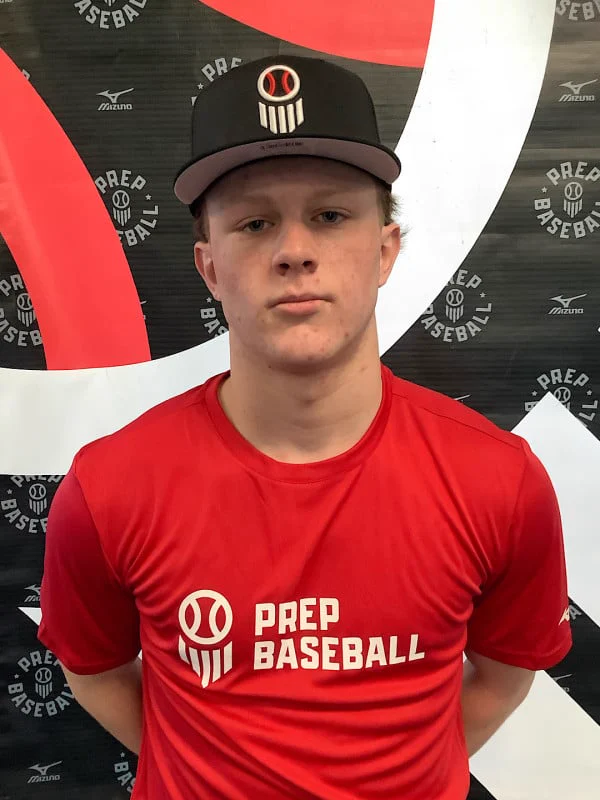

Committed · University of Kentucky
Gavin
McGee
Right-handed pitcher & outfielder · Class of 2028
- Height / Weight
- 6′1″ · 190
- Bats / Throws
- R / R
- School
- P27 Baseball Academy
- Travel
- USA Prime National
- Hometown
- Indianapolis, IN
- PG Grade
- 9 (top-10-round / top college)

max FB
The climb
76 to 94 mph in under three years
Max fastball at every Prep Baseball Report event since he was 13. Perfect Game logs a 10 mph gain since June 2024 alone.
Headshots from PBR events, 2023–2026. Chart data: Prep Baseball Report.
Arsenal
Six pitches on the Trackman sheet
Trackman readings from his most recent PBR looks. At the March 2026 bullpen PBR saw “five distinct pitch shapes,” including a two-plane curveball over 2,500 rpm.
- Fastball94mph max90–94 mph2,384 rpm avg spinPBR Future Games, Jul 22 2026
- Curveball84mph max81–85 mph2,596 rpm avg spinPBR Future Games, Jul 22 2026
- Cutter87.1mph max82–85 mph (Jun 2026)2,238 rpm avg spinPBR Future Games, Jul 22 2026
- Changeup83.3mph max80–83 mph2,286 rpm avg spinPBR, Mar & Jul 2026
- Sinker88.9mph maxStrong bottom at times2,290 rpm avg spinPBR Preseason All-State, Mar 8 2026
- Slider80mph max78–80 mph2,384 rpm best avg spinPBR National Program Invitational, Jun 4 2026
Two-way athlete
Runs, throws and swings like an outfielder
- 94mphOutfield armPG, Mar 14 2026
- 4.70sec40-yard dashPG, Mar 14 2026
- 1.49sec10-yard splitPG, Mar 14 2026
- 7.04sec60-yard dashPBR, Oct 11 2025
- 91.1mphMax exit veloPBR, Oct 11 2025
- 73.3mphMax bat speedPBR, Feb 22 2025
“There is unteachable arm talent here that will garner recognition late next summer.”Prep Baseball Report, Oct 2025
“Reached back for an event-best 92.4 to conclude the look.”Prep Baseball Report, Mar 2026
“The curveball plays with bite and will get more swing-and-miss when he is able to set it up with the fastball.”Prep Baseball Report, May 2026
Recent outings
Best recent lines
| Date | Opponent | Line |
|---|---|---|
| Aug 2, 2026 | Landsharks 17U Gold Bays | 0 H |
| Jul 13, 2026 | SBA Bolts National 2028 | 4.0 IP · 0 H · 0 R · 0 BB |
| Jul 26, 2025 | Slammers Bauer | 6 K |
Best single-game lines listed on his Perfect Game profile. Perfect Game ranked him No. 315 nationally in the 2028 class as of August 2026 (Bat Cats Central).
Timeline
How he got here
- Canes Scout WeekendFirst PBR look: 76 mph at 13.
- Junior Future Games“Gavin was the last arm we invited to JFG as a 14 yr old.” (Cooper Trinkle, PBR)
- PBR Preseason All-State, Freshman84–85 mph with 18.6 in. of vertical break.
- Indiana Fall State GamesHighest-rated 2028 in attendance; 92 mph from the outfield.
- PG Indianapolis Indoor ShowcaseNamed to the Top Prospect List.
- PBR Future GamesFastball tops out at 94 mph. Four shutout innings, no hits, vs. SBA Bolts National.
- Commits to KentuckyKentucky’s first commitment in the 2028 class.
- P27 Baseball AcademyMoves to P27 in Lexington, S.C. for his junior year.